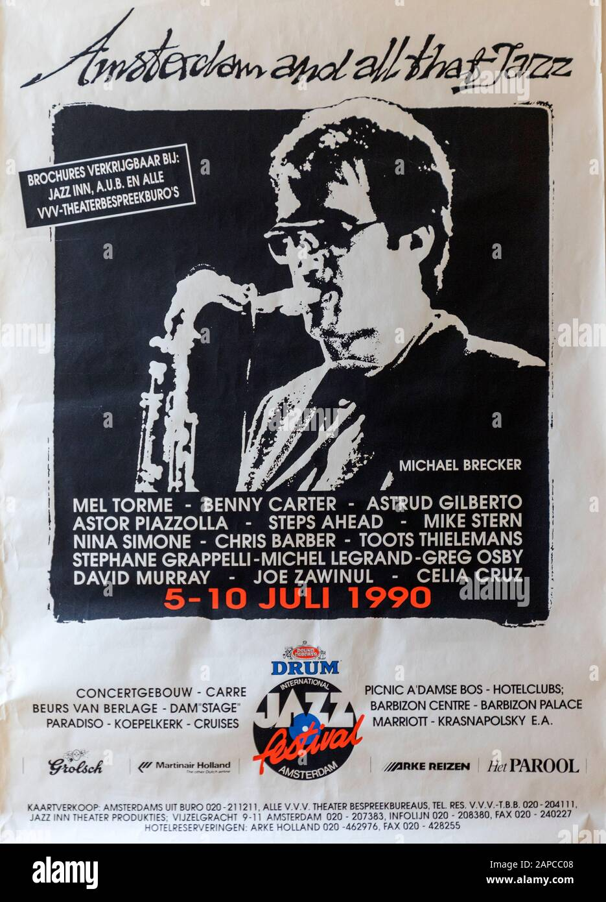

Aqui podemos apreciar como eran los instrumentos en la prehistoria, eran formado apartir de el tallamiendo de huesos, esto lo hacian para danzas a sus dioses
o como instrumento para dar alarma como lo es el cuerno de carnero, en otros lugares conocidos como "shofar" fueron creados para dar alarma a los pueblos de que algo iba a ocurrir y se le asgnaron
ciertos tipos de sonido para cada aviso
Los esclavos eran llevados a campos de algodon para recoger el algodon que las plantas producian
ahi fue donde empezaron a crear sus "canciones de campo" en varias de ellas cantaban lo que querian hacer personalmente o
cantaban las infidelidades de sus dueños

Imagen de poster del concierto Amsterdam y todo eso Jazz 1990